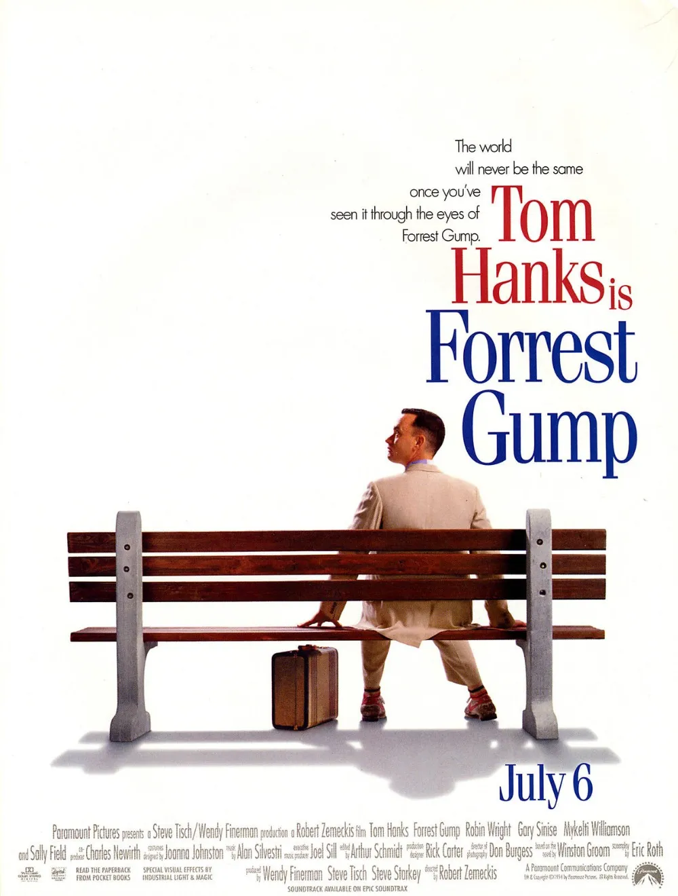
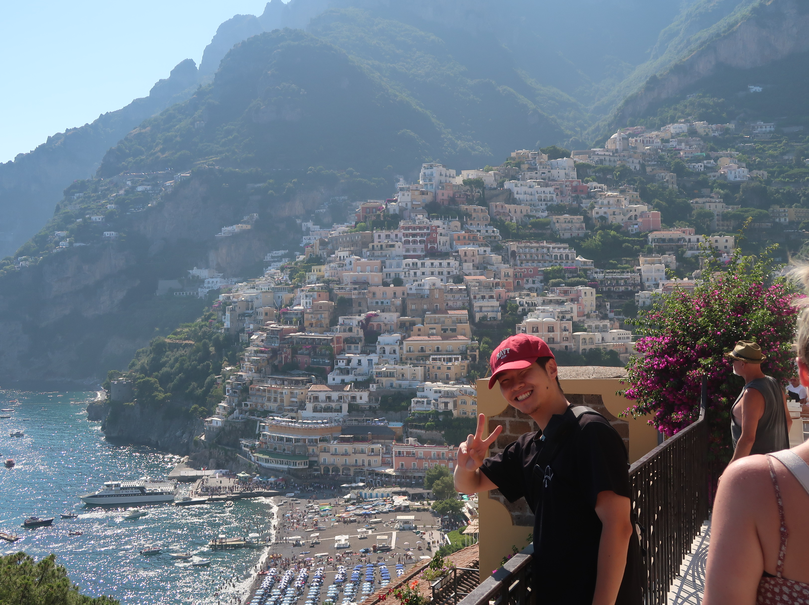

-
1. 프레스트 검프
- 있잖아 포레스트. 베트남에서 무서웠어?
- 그래. 글쎄, 잘 모르겠어. 비가 그치고 별이 보일 때도 있었어. 그땐 정말 좋았어. 바이우에서 태양이 질 때랑 비슷했어. 물 위에 수백만 개의 별들이 반짝이고, 산속 호수가 너무나도 깨끗해서 두 개의 하늘을 포갠 것 같았지. 사막에서 태양이 솟아오를 때, 하늘과 땅의 경계를 알 수 없는 그 광경도 너무도 아름다웠어.
- 나도 같이 있었으면 좋았을걸.
- 같이 있었어.
- 무덤은 우리 나무 밑에 만들었어. 엄마는 늘 죽음이 인생의 일부랐지만. 아니었으면 좋겠어. 제니, 엄마와 댄 중위님 중 누가 옳은진 모르겠어. 우리에게 운명이란 게 있는 건지, 아니면 모두 바람처럼 떠다니는 건지. 하지만 내 생각엔 둘 다 맞는 것 같아. 두 가지가 동시에 일어나는 건지도 몰라. 보고 싶어 제니. 곁에 있을테니 뭐든 필요하면 불러.
-
2. 콘스탄티노스 카바피 [Ithaca]
기도하라, 네 길이 오랜 여정이 되기를
크나큰 즐거움과 크나큰 기쁨을 안고
미지의 항구로 들어설 때까지
네가 맞이할 여름날의 아침은 수없이 많으니
. . .
언제나 이타카를 마음에 두라
네 목표는 그곳에 이르는 것이니
그러나 서두르지는 마라
비록 네 갈 길이 오래더라도
늙어져서 그 섬에 이르는 것이 더 나으니
길 위에서 너는 이미 풍요로워졌으니
이타카가 너를 풍요롭게 해주길 기대하지 마라
이타카는 너에게 아름다운 여행을 선사했고
이타카가 없었다면 네 여정은 시작되지도 않았으니
이제 이타카는 너에게 줄 것이 하나도 없구나
설령 그 땅이 불모지라 해도, 이타카는 너를 속인 적이 없고
길 위에서 너는 현자가 되었으니
마침내 이타카의 가르침을 이해하리라
돔푸
자기소개
안녕하세요! 전 돔푸에요. 저는 25년 2월에 학교를 졸업하고, 우아한테크코스에서 공부하고 있어요. 새로운 환경에 잘 적응하는 저이지만, 아직 우아한테크코스의 여러 문화들은 많이 낯설어요. 시간이 지나서 빨리 적응하고, 여러분과도 친해지고, 여러 곳을 돌아다니고 싶어요!
저는 풍물, 영화, 여행에 관심이 가장 많고 이것을 제외하더라도 정말 많은 취미가 있어요. 수영, 스키, 개발, 드럼, 게임, 패션, 전자제품, 맛집탐방 등등 저는 여러분과 놀기 위해 준비된 인재에요 :)
나만의 갤러리
 |
 |
 |
 |
 |  |
 |
 |
 |
좋아하는 구절들
저는 여러 글과 시, 영화도 참 좋아하는데요, 삶에 대한 고민을 하게 해주는 이야기들을 특히 좋아해요. 저와 비슷한 취향이시거나, 또 제 취향을 알고 싶은 분들을 위해 저의 인생 구절 리스트를 남겨요.
제가 좋았던 구절들을 읽으며 제가 느낀 것을 같이 공유할 수 있는 시간이었으면 좋겠어요.